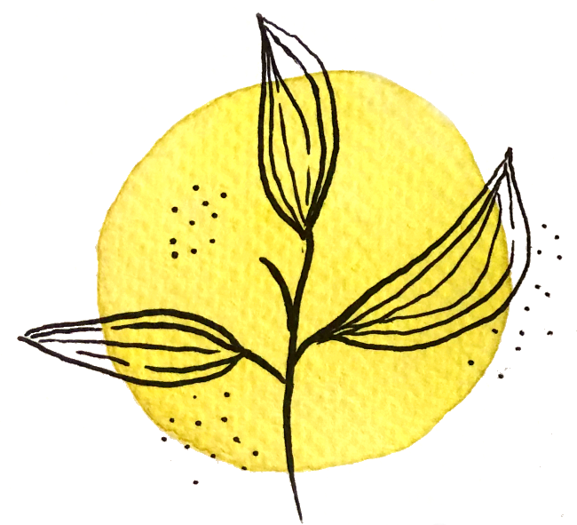

Com arribar
La Torre del Veguer
Farem la cerimonia i la celebració a la Torre del Veguer, un mas del sgle XIV a
Sant Pere de Ribes, tocant el terme de Vilanova i la Geltrú, a
la
Comarca del Garraf.
Aquest mas és actualment un celler que elavora vi i cava a partir de varietats
autòctones del Garraf amb les seves propies
vinyes ecològiques que es troben envoltant el celler amb el Mar Mediterrani com
a
teló de fons.
home
Urb. Torre del Veguer s/n
08810 Sant Pere de Ribes.
directions_car
Sortida 1A Autovia C-15. El mas disposa d'aparcament privat.
train Rodalies R2 estació de Vilanova i la Geltrú.

10 de setembre del 2022
Torre del Veguer

Formulari

Horari
17h Arribada
17:30h Celebració
18:30h Fotos de grup
19h Aperitius i sopar
21h Música
3h Fi de festa